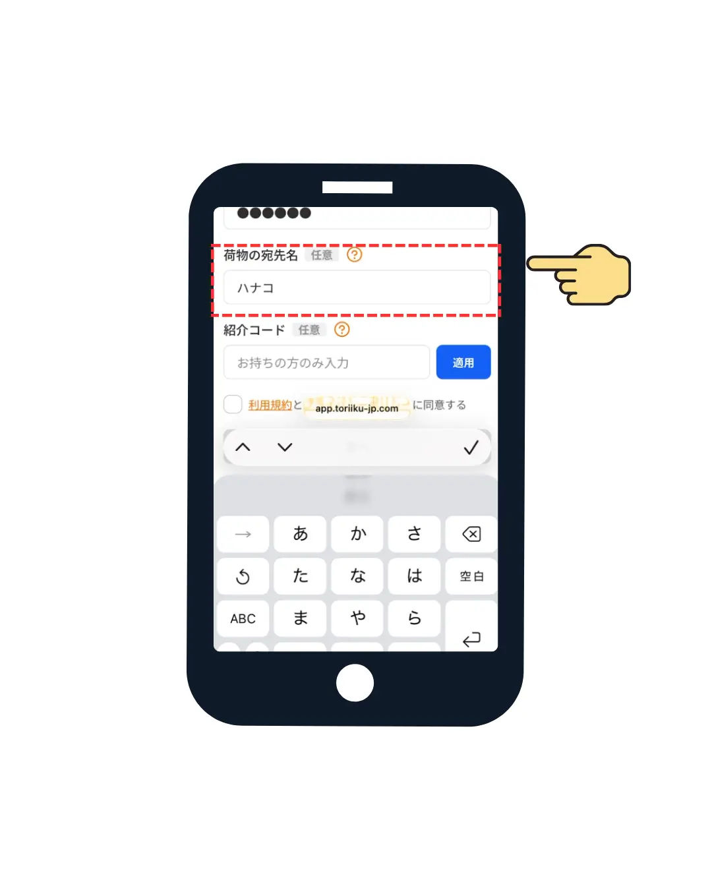
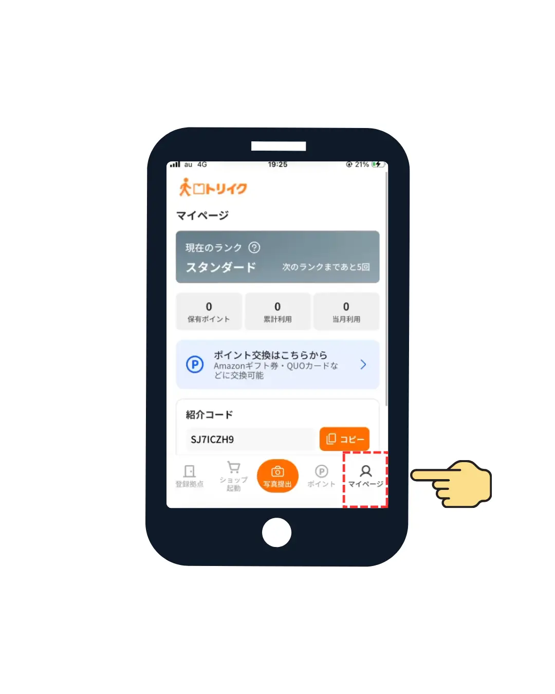
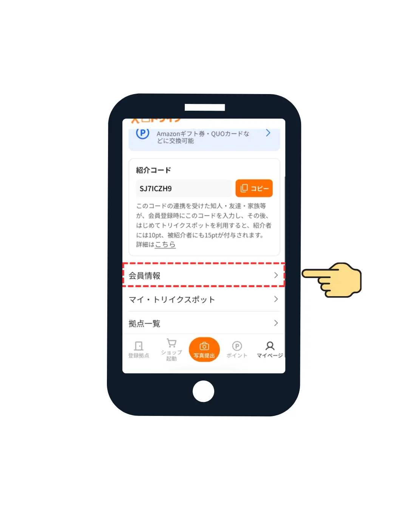
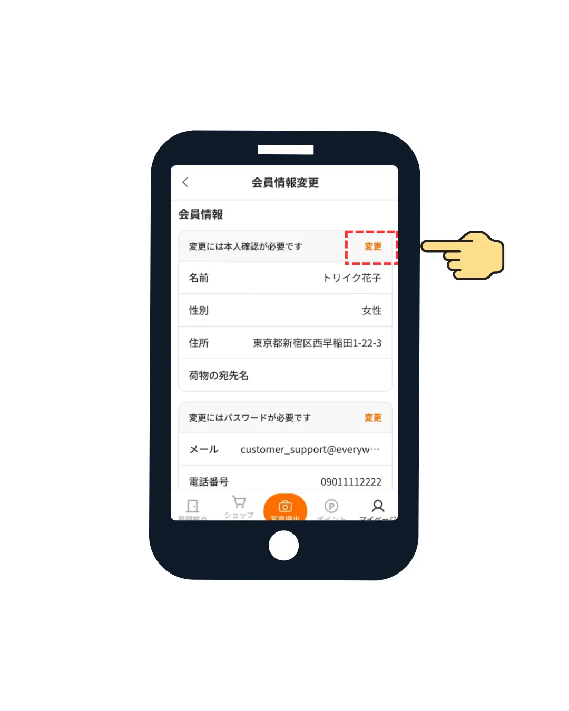
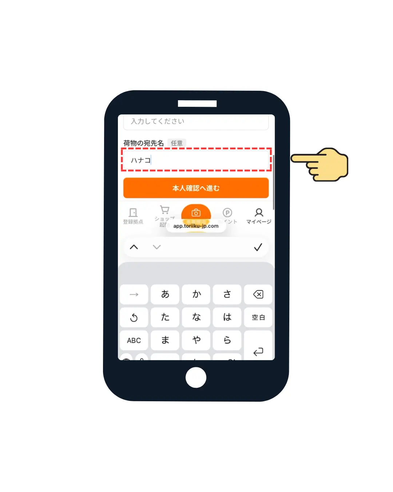

トリイク 仮名申請の方法
ネットショップに入力する荷受人名（＝伝票シールに記載される名前）を、本名ではなく別の名前にしたい方は、仮名申請をお願いします。
※ 仮名申請は新規会員登録時と会員登録後のどちらでも可能です。
※ トリイク公式WEBサイト「07：荷物の写真を撮って送る」で写真撮影する伝票に記載がある荷受人名と、申請した仮名が一致しなければ、ポイントを付与しません。
新規会員登録時に仮名申請する場合
「荷物の宛名名」欄に希望の仮名を入力
新規会員登録の入力画面にて、赤枠で囲まれた「荷物の宛名名（任意）」の欄に、ネットショップ等の配送先で本名の代わりに利用したい希望の仮名を入力して登録を行います。

オンラインでの本人確認に進んで承認されれば完了
画面の案内に沿って、オンラインでの本人確認手続き（eKYC）を行います。会員登録完了後、運営側での確認審査が行われ、承認されましたらLINEでメッセージが届き、仮名申請を含めた登録フローが完了となります。
会員登録後に仮名申請（変更・追加）する場合
画面右下の「マイページ」メニューをクリック
トリイク公式のフッターメニュー、またはLINE連携メニューから、画面右下にある赤枠で囲まれた「マイページ」アイコンをクリックします。

メニュー内の「会員情報」欄をクリック
マイページのメニュー項目が一覧で表示されます。紹介コード項目の下部にある、赤枠の「会員情報」をクリックして進みます。

会員情報変更内の「変更」ボタンをクリック
変更画面が開きます。「変更には本人確認が必要です」の項目右横にある、赤枠で囲まれたオレンジ色の「変更」ボタンをクリックします。

「荷物の宛名名」に仮名を入力して「本人確認へ進んで承認されれば完了
編集用のフォームが開きます。赤枠で囲まれた「荷物の宛名名（任意）」の入力欄に、新しく追加・変更したい希望の仮名を入力し、オレンジ色の「本人確認へ進む」ボタンをクリックしてカメラでの本人確認手続き（eKYC）を行います。
提出後、運営側での確認審査が行われ、承認されましたらLINEでメッセージが届き、新しい仮名への変更・追加手続きがすべて完了となります。
